Materials for Animation Textures
Animation Textures is a technique for storing animation data in a texture and animating a mesh by using a special material to read and replay the animation data.
This technique is typically used for animating large numbers of background characters with minimal overhead. It's used in the Epic Games City Sample to animate the crowds walking around the city. If you open the City Sample and play the MassCrowd map you will see a scene like this in which animation textures are used to animate the crowd members:

This article describes materials which work with animation textures. It is part of a set of articles about animation textures which describe how animation textures are created and how they can be used by MASS, PCG and Niagara.
It;s all about materials
Unreal Engine implements vertex animation by using materials, material instances and material layers. It's helpful to understand the relationship between these parts:
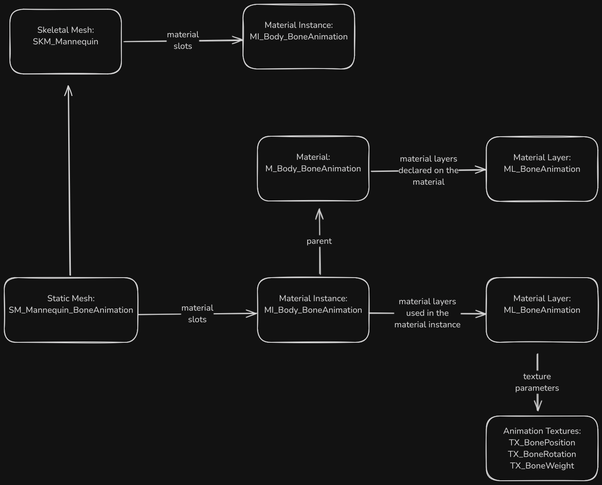
This picture shows:
- a skeletal mesh has material instances which are specified in its material slots. When a static mesh is created from that skeletal mesh these material instances are copied to the material slots of the static mesh;
- a static mesh can have one or more material instances;
- these materials instances are created from a material. This parent material is where the actual shader program is created, the material instance holds parameters which are used by the shader at runtime;
- the parent material uses the material layers system which allows materials to be composed from layers of functions and other materials in a relatively straightforward manner;
- the parent material references a specific material layer (either ML_BoneAnimation or ML_VertexAnimation) which animates the bones or vertices of the mesh at runtime;
- the material layer (such as ML_BoneAnimation) is created on the parent material but it is used on the material instance, not on the parent material;
- the material layer (such as ML_BoneAnimation) references specific textures which store the bone or vertex position, rotation and weight data for use in animating the elements of the mesh
Creating the example project
For this example, from the launcher create a new Game, Third Person, Blueprint, Desktop project with starter content. Call it "VertexAnimation". This example was created using Unreal version 5.4.3.
Go into Edit | Plugins and enabled the AnimToTexture plugin an restart.
In the content browser settings make sure "Show Plugin Content" and "Show Engine Content" are both enabled.
Updating an existing material
To demonstrate how materials support animation textures we will update the materials and material instances associated with the skeletal mesh SKM_Manny_Simple which is found in the folder /Content/Characters/Mannequins/Meshes.
This skeletal mesh uses these materials and material instances:
| Material Instance | Parent Material | Parent Material Instance |
|---|---|---|
| MI_Manny_01 | M_Mannequin | |
| MI_Manny_02 | MI_Manny_01 |
Both these material instances derived from the same material M_Mannequin.
Making the static mesh and copying the material assets
Make a new folder under the /Content folder called "ATMaterials". We will put all our content there.
Open the SKM_Manny_Simple skeletal mesh and use the "Make Static Mesh" button in the top toolbar to create a new static mesh in the /Content/ATMaterials folder. Name the static mesh "SM_ATManny_Simple".
Find the material instances MI_Manny_01 and MI_Manny_02 in the folder /Content/Characters/Mannequins/Materials/Instances/Manny and copy them to the /Content/ATMaterials folder. Rename them MI_ATManny_01 and MI_ATManny_02, just to make it easier to check we are altering our own files.
Find the material M_Mannequin in the folder /Content/Characters/Mannequins/Materials and copy it to the /Content/ATMaterials folder. Rename it M_ATMannequin.
Now, in the ATMaterials folder:
- open MI_ATManny_01 and change the parent to M_ATMannequin
- open MI_ATManny_02 and change the parent to MI_ATManny_01
- open SM_ATMannySimple and change the materials to MI_ATManny_01 and MI_ATManny_02
This should result in the static mesh only referencing materials and material instances in our /Content/ATMaterials folder. If you look at SM_ATMannySimple in the reference viewer you will that we still reference textures from the original folders, that's ok we won't be changing them:
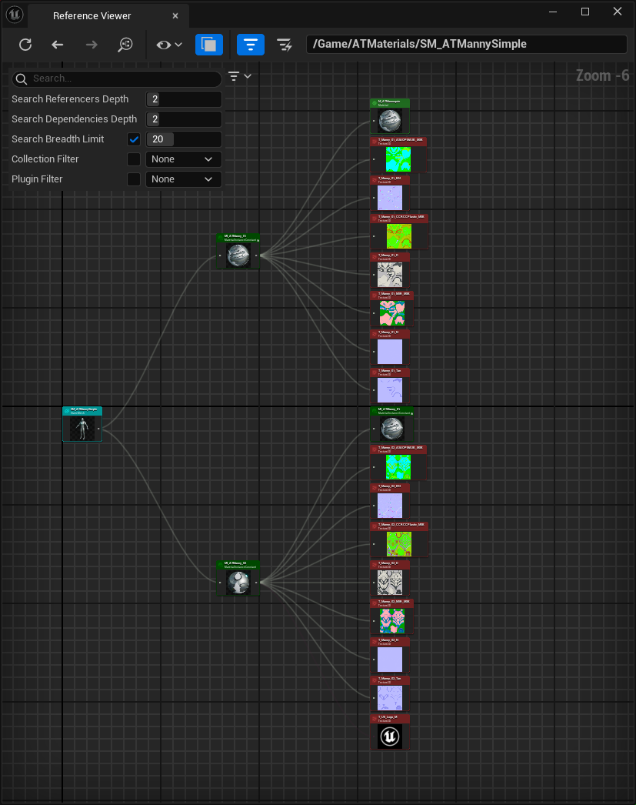
Adding the material layer
We need to change the material M_ATMannequin to support material layers so it can be used with animation textures.
Open the material M_ATMannequin.
The part we want to change is on the right side:
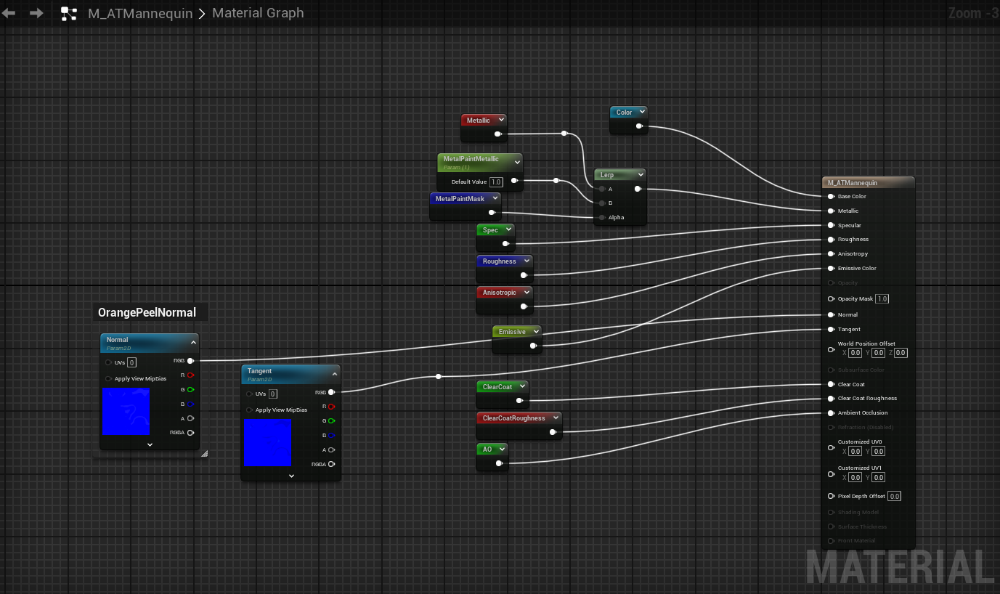
There is a property called "Use Material Attributes":
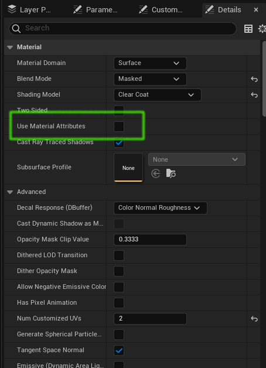
We want to change this property but not yet. If you just tick it the M_ATMannequin node will be deleted from the material graph. Don't do this yet.
First we want to add a MakeMaterialAttributes node and connect all the nodes which are inputs into the M_ATMannequin into the MakeMaterialAttributes that way we don't have to remember where they where connected.
Add a MakeMaterialAttributes node and connect it like this:
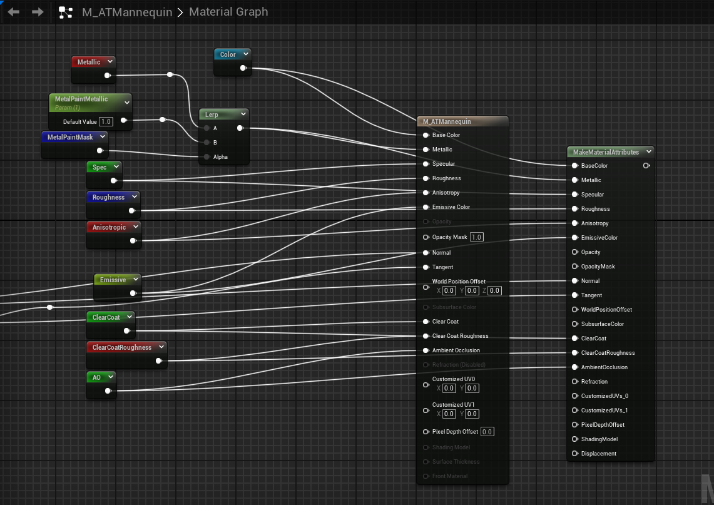
Then check the "Use Material Attributes" property. This will delete the big M_ATMannequin and replace it with a small one. This should leave you with this:
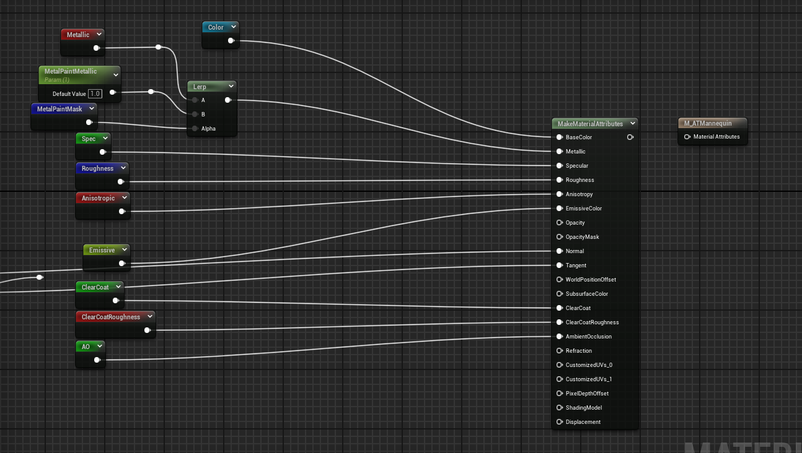
The above nodes create the visual appearance, now we have to add the nodes which do the actual bone or vertex animation. Here we will do bone animation, the vertex animation process is similar.
Add the nodes and connections shown in the this picture:
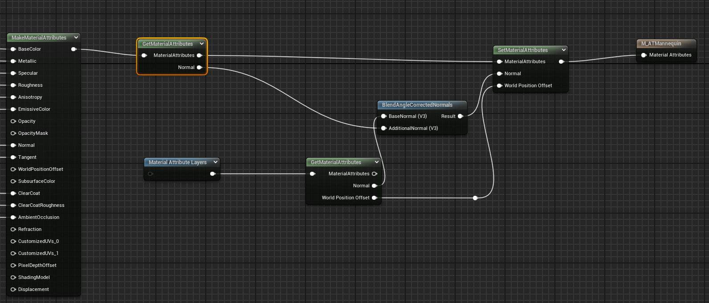
When you add the GetMaterialAttributes nodes in order to get pins on the node you will need to edit its details and add elements to the "Attribute Get Types" property.
The top GetMaterialAttributes has this 1 entry:
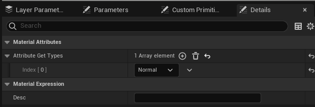
The bottom GetMaterialAttributes has these 2 entries:
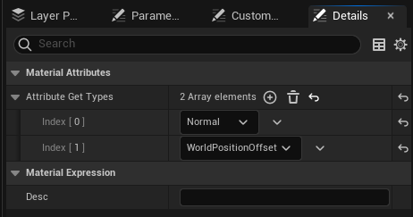
When you add the SetMaterialAttributes node in order to get pins on the node you will need to edit its details and add elements to the "Attribute Get Types" property:
Note that we added the crucial MaterialAttributeLayers node. Set the properties of this node like so:
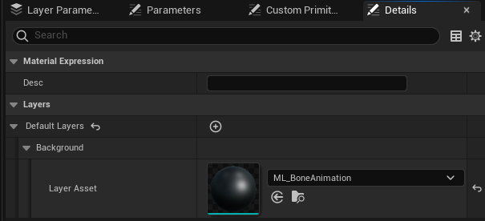
This node is what make animation textures work.
Save the M_ATMannequin material node.
We can't set the properties of the ML_BoneAnimation here in the material, but if you open a material instance derived from this material (such as MI_ATManny_01), in the Layer Parameters tab you will see parameters from the ML_BoneAnimation. These parameters will be assigned values when the AnimToTexture process is run:
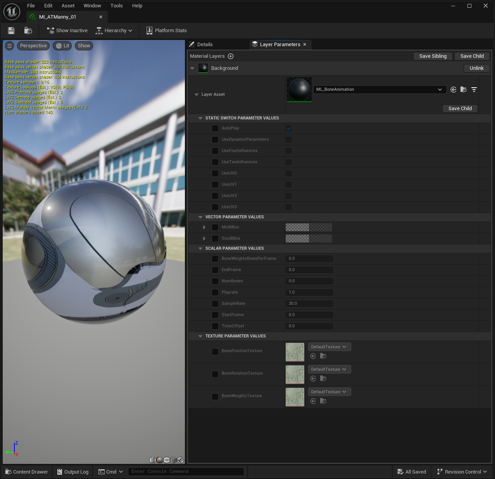
If you don't see the Layer Parameters tab you can open it using the Window | Layer Parameters menu option.
Other approaches to materials - layer blend nodes
We modified the material above by adding a MakeMaterialAttributes node, but is only one way of modifying a material. We took this approach because it suited the material we were modifying, enabling us to simply replace the M_ATMannequin node with a MakeMaterialAttributes and use all of the same connections.
The AnimToTexture plugin in Unreal Engine 5.4 has materials constructed using layer blend nodes like this:
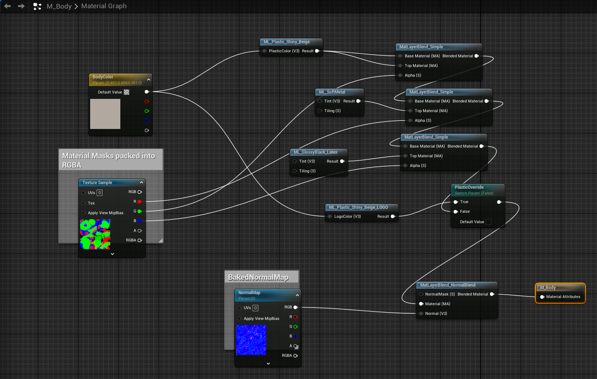
To extended this material to support animation textures we would add the same set of modes we added to the M_ATMannequin material but without having to use a MakeMaterialAttributes node:
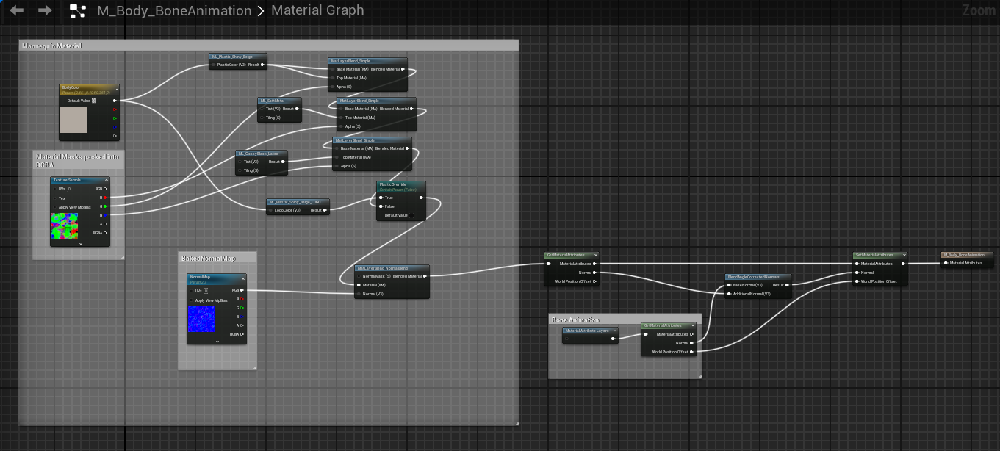
Reference
Unreal Engine 5 AnimToTexture Plugin, How to Use it to make Vertex Animation Textures for crowds This is a great video by Kevin Romond based on Unreal 5.2.
UE5 AnimToTexture plug-in This is a translation of an article originally in Japanese
Baking Out Vertex Animation Tutorial
Feedback
Please leave any feedback about this article here